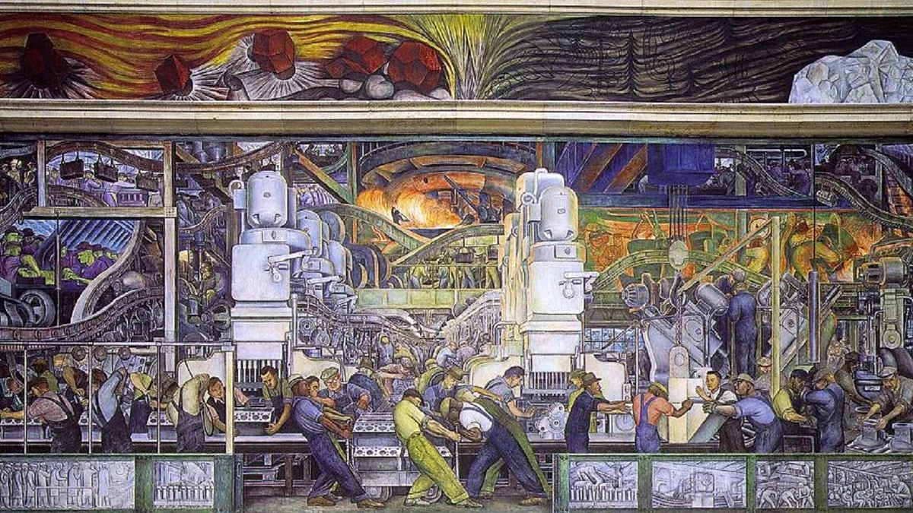

機械の大きさを、人の体と比べる。
白く明るい機械が高く立ち、その下で人々が体を曲げたり腕を伸ばしたりしています。人と設備の大きさの差を見てみましょう。
作品・制作の例7件を紹介しています。実作品画像1点、参照・関連画像0点。画像の収集は継続中です。
公共的・教育的な美術運動（単一技法・固定様式ではない）
Mexican Muralism
絵を買わなくても、学校や美術館の壁で大きな作品に出会える。メキシコ壁画運動は、そうした場所を使い、歴史や働く人の姿を描きました。
リベラ、オロスコ、シケイロスの表現は同じではありません。アウロラ・レイエスなど、ほかの画家の仕事も一緒に見ていきましょう。
実作品を見る

画像を表示できませんでした。下の出典ページで確認できます。
ディエゴ・リベラ / 壁画：1932–1933年／写真：撮影年不詳
北壁33.10.Nの部分図です。壁画連作の27面すべてや北壁全体を写した写真ではありません。
白く明るい機械が高く立ち、その下で人々が体を曲げたり腕を伸ばしたりしています。人と設備の大きさの差を見てみましょう。
手前の作業列から奥の炉まで、梁や管、機械が重なっています。一人の英雄だけでなく、つながった仕事の流れに目が向く配置です。
掲載写真には中央の工場場面と上下の帯状の部分が写っています。北壁の上方の大きな人物像や隅の場面、ほかの三方の壁は含まれていません。
Diego M. Rivera, Detroit Industry, North Wall, 1932–1933, fresco. Detroit Institute of Arts, Gift of Edsel B. Ford,33.10.N. 部分図。Photo credited to Cactus.man; Public Domain, via National Park Service.
出典で作品・資料を見る ↗Public Domain（写真：NPSの個別表示／原作品：DIAが米国内公表について明示）
DIAは、この壁画が米国内の公表についてPublic Domainであると明記しています。日本では保護期間を確認しています。すべての国で自由に使えるという意味ではありません。
写真は米国国立公園局（NPS）がCactus.man撮影・Public Domainと表示しています。CC0という表示ではありません。
米国・日本での本サイト掲載を対象とした確認です。ほかの国や別用途での利用条件を保証しません。
NPSが配信する部分図を無加工で取得しました。配信元の切り抜きを含み、原壁画全体の画像ではありません。写真の撮影年は不詳です。
作品の所蔵・権利情報 ↗画像の利用条件 ↗NPS配信画像の全体と縦横比を保って縮小し、WebPに変換しました。追加の切り抜き・色補正・描き直しはしていません。
フレスコ壁画・産業と労働・公共美術館
美術館の中庭を囲む壁に、産業や労働を描いた作品の一部です。
ここで取り上げるのは、北側の壁です。
工場の仕事を、多くの人が見る場所に描く意味を考えます。
作品・資料の出典を見る ↗原題：Detroit Industry — North Wall
ディエゴ・リベラ（Diego Rivera） / 1932–1933 / フレスコ壁画・産業と労働・公共美術館
27面という数は連作全体で、北壁だけの数ではありません。
対象は33.10.Nです。
壁画の一部、全体を写したもの、制作途中の写真は区別します。
メキシコ国外への広がりを示す例なので、メキシコ国内の代表作も必要です。
掲載写真は北壁中央の工場場面などを写した部分図です。
撮影年は不詳です。
DIAは、この連作を、技術、労働、人の営みを、美術館の中庭の四方の壁に描いた作品と説明しています。ここでは北側の壁を見ます。工場での生産を、多くの人が鑑賞する場所に描くことで、題材と場所がどう結びつくかを考えます。
学校のフレスコ壁画・女性教師への暴力と公教育
女性教師への暴力と、それを見る子どもを描いた壁の絵です。
学校の入口の広間にあります。
学ぶための場所に、教育をめぐる争いが描かれています。
作品・資料の出典を見る ↗原題：Atentado a las maestras rurales
アウロラ・レイエス（Aurora Reyes） / 1936（INBAL。AGNの1934記載と不一致、未解決） / 学校のフレスコ壁画・女性教師への暴力と公教育
この壁画そのものと、準備のための素描（そびょう。下描きなどの線で描く絵）、近年の展覧会のための複製を区別します。年代はINBALが示す1936年を採用しています。AGNの異なる記載は、引き続き照合する課題として残します。
学校の玄関広間で、女性教師への暴力と、それを目撃する子どもを描いています。教育をめぐる争いを、公共教育の場で問いかける例です。デトロイトの産業や労働とは異なる題材と、メキシコ国内での展開を補います。
フレスコ連作・礼拝堂のドームと建築空間
祈りをささげる建物の壁や、丸い天井に描かれた絵の集まりです。
スペインと先住民の歴史を扱っています。
建物の中でどこに立つかが、絵の見え方にも関わります。
作品・資料の出典を見る ↗作品名（出典表記）：カバーニャス礼拝堂の壁画群：《炎の人》を中心に
ホセ・クレメンテ・オロスコ（José Clemente Orozco） / 1930年代後半（UNESCO） / フレスコ連作・礼拝堂のドームと建築空間
57点は壁画群全体の数です。ドームだけの画像、礼拝堂全体、ほかの壁面を区別します。UNESCOの1936–39年という記載は、Guadalajaraでの活動期間ともされています。個々の作品を描き始めた年に、そのまま当てはめません。
礼拝堂には、スペインと先住民の歴史を扱う壁画が広がっています。ドームに描かれた《El Hombre de Fuego》が、視線を集める中心です。一枚の平らな絵とは違い、建物の中のどこから見るかと、歴史をどう語るかの関係を説明できます。
屋外壁画・政治的批判・素材実験と検閲
ロサンゼルスの建物の外に描いた絵です。
注文されたのどかな風景とは違い、政治への意見を表す絵になりました。
後に白く塗りつぶされ、さらに後の時代に保存の作業が行われました。
作品・資料の出典を見る ↗原題：América Tropical
ダビド・アルファロ・シケイロス（David Alfaro Siqueiros／Bloc of Mural Paintersの協働） / 1932 / 屋外壁画・政治的批判・素材実験と検閲
1932年の制作、白く塗りつぶされたこと、後の保存作業を区別します。今残る色あせた状態を、完成当初の色とは考えません。2012年は、保存を経て公開された年です。
ロサンゼルスの屋外の壁に、依頼されたのどかな風景とは違う、政治的なイメージを描きました。作品は白く塗りつぶされました。公共の場所で意見を表すことと、それを制限する検閲（けんえつ）を考えられます。新しい道具を使い、フレスコ技法を変えた実験も一緒に説明できます。
講堂の壁画・エンコースティック
学校の講堂で、知識や芸術を人の姿に表した壁画です。
ろうを使う絵の方法にも注目します。
作品・資料の出典を見る ↗原題：La Creación
ディエゴ・リベラ（Diego Rivera） / 1922年（サン・イルデフォンソの個別記録） / 講堂の壁画・エンコースティック
サン・イルデフォンソのシモン・ボリバル講堂にある壁画です。個別記録の1922年を表示します。後年のリベラ作品と同じフレスコ技法とはしません。
学校の講堂に描かれた初期の作品です。ろうを使う技法を用い、知識や音楽などの考えを人物の姿で表しています。壁画運動が、工場や労働だけを描いたわけではないことがわかります。
学校の壁画・フレスコ
地面を掘った防御の場所が、作品の題名です。
倒れる人の斜めの配置から、戦いの痛みを考えます。
作品・資料の出典を見る ↗原題：La trinchera
ホセ・クレメンテ・オロスコ（José Clemente Orozco） / 1926年 / 学校の壁画・フレスコ
サン・イルデフォンソにある壁画本体です。公式解説の図像説明に基づきます。ウェブ掲載画像への機関の複製許可表記は、このサイトへの転載許可とは別です。
戦いの中で倒れる三人が、斜めの流れをつくります。サン・イルデフォンソの解説は、革命の力と痛みを読む作品として紹介しています。勝利を祝う絵だけではないことがわかります。
図書館の壁画連作・フレスコ
図書館の壁に、長い歴史の物語が広がります。
「アメリカ」を米国だけと考えず、破壊と創造のつながりをたどります。
作品・資料の出典を見る ↗原題：The Epic of American Civilization
ホセ・クレメンテ・オロスコ（José Clemente Orozco） / 1932〜1934年 / 図書館の壁画連作・フレスコ
米国ニューハンプシャー州のベイカー図書館にある連作全体です。24は画面数で、24の独立した代表作として数えません。個々の画面番号と所蔵番号の対応は別途確認が必要なため、ここでは断定しません。
ダートマス大学の図書館で、24の画面が歴史を問い直します。大学美術館は、破壊と創造が繰り返される物語として説明しています。一方向に進歩する歴史だけではない見方を考えられます。
革命後の社会では、教育をどう広げ、どんな歴史を共有するかが大きな課題でした。学校などの壁は、絵を買って家に飾る人だけでなく、その建物を使う人へ語りかけられる場所です。
一方で、何を描けるかは、建物を管理する人や費用を出す人とも関係します。「公共のための絵」だから、いつでも誰でも自由に見られた、とは限りません。誰が依頼し、誰が見ていたのかも調べてみましょう。
リベラの《デトロイトの産業》では、工場の仕事や機械が美術館の四方の壁へ広がります。技術をたたえるだけでなく、戦争に使われる面も描きます。オロスコの《塹壕（ざんごう）》は、戦いの力強さとともに、人が倒れる痛みに目を向けます。
シケイロスの《アメリカ・トロピカル》は、米国の力を批判する図像を街の壁に描き、後に白く塗りつぶされました。この違いは、三人の全作品を決めつける分類ではありません。一作ずつ、題材と場所を比べるための入口です。
フレスコは、まだ乾いていないしっくいに絵具をのせる方法です。でも、この運動が使った技法はそれだけではありません。リベラの《創造》は、ろうや樹脂を用いるエンコースティックで描かれました。
シケイロスは1936年、ニューヨークで実験工房を開きました。参加者は床に置いた画面へ塗料を流すなど、新しい材料と動きを試します。壁画運動を見るときは、完成した大きな絵だけでなく、それを支える下描き、材料、共同制作にも注目できます。
デトロイトでは、リベラの制作を美術館長が後押しし、エドセル・フォードが資金を出しました。働く人を描く画家と、企業に関わる支援者の関係には、緊張もあります。支援者の立場と絵の内容を、同じものとして読まないことが大切です。
メキシコ市のアベラルド・L・ロドリゲス市場では、食品や健康を扱う計画に対し、労働者の貧しさや不公平へ目を向けた画家たちもいました。リベラは技術面の助言役、パブロ・オヒギンズは制作を監督する役でした。すべてを一人の画家の仕事としないで見ましょう。
礼拝堂の丸天井、美術館の中庭、図書館の壁。壁画は、建物の形と切り離せません。カバーニャスの《炎の人》は、礼拝堂に広がる連作の一部です。天井の一場面だけを写した写真から、建物全体を見たように説明しないようにしましょう。
オロスコがダートマス大学で描いた《アメリカ文明の叙事詩》は24面の連作です。大学美術館は、これを一直線の進歩の物語ではなく、破壊と創造が繰り返される歴史として説明しています。視線を移しながら、どの場面が隣り合うかを考えられます。
《アメリカ・トロピカル》は1932年の制作後、段階的に白く塗りつぶされました。後のチカーノ、つまりメキシコ系米国人の壁画運動の中で関心が高まり、保存を経て2012年に公開されました。現在の薄れた色を、完成当時の色とは考えません。
メキシコと米国の画家は、国境を越えて制作し、学び合いました。
ホイットニー美術館は、1925〜1945年の交流が米国の美術へ与えた影響を紹介しています。
今日の街の壁画やグラフィティにも社会へ語る表現がありますが、似ているという理由だけで、すべてをこの運動の直接の子孫とはしません。
メキシコ市
サン・イルデフォンソでは、リベラだけでなく、シャルロ、レアル、レブエルタスらも壁に描きました。フレスコと、ろうを使う技法が並びます。
グアダラハラ
カバーニャスでは、オロスコの壁画が建物の内側に広がります。建物の設計者と、後から壁画を描いた人を分けて見ます。
米国・デトロイト
リベラは工場を観察し、労働と機械を美術館の中庭へ描きました。北壁は、四方の壁に広がる連作の一部です。
米国・ロサンゼルス
シケイロスの屋外壁画は白塗りを経験し、後の世代に読み直されました。制作の年と、保存後に公開した年を分けます。
米国・ニューハンプシャー
ダートマス大学のオロスコ作品は、ベイカー図書館にあります。「アメリカ」を米国だけの歴史に限定せずに考える入口です。
革命後の社会の再建が進み、バスコンセロスが文化と公教育の計画を進める。1921年には教育大臣となる。
サン・イルデフォンソで複数の画家による壁画制作が進む。単独の発明というより、共同の実験の場となる。
オロスコが《塹壕》を描く。革命の争いを、勝利だけでなく痛みからも考えさせる。
リベラはデトロイトで1932〜1933年に制作。シケイロスはロサンゼルスで1932年、オロスコはダートマスで1932〜1934年に壁画を描く。
シケイロスがニューヨークで実験工房を開き、材料や塗り方を試す。
オロスコがカバーニャスの礼拝堂に壁画連作を描く。年はユネスコの詳しい解説の表記に従う。
《アメリカ・トロピカル》が保存を経て公開される。新しく描き直した年ではない。
革命後のメキシコでは、社会を立て直す中で、公教育と新しい国の文化が重視されました。
教育を担当したホセ・バスコンセロスは、公共の建物の壁を絵で語る場にしようとしました。
サン・イルデフォンソでは、複数の画家や助手が異なる考えを持ち寄ります。
政府の支援を受けたことと、作品がすべて同じ政治的主張をしたことは、分けて考えます。
共通の配色は決めず、作品ごとの材料と保存状態を見ます。《América Tropical》の今の表面は、色が薄くなっています。これを1932年の完成時の色だとは考えません。
共通の書体は確認できていません。作品の中の文字、作品名、後から付けられた解説表示は分けて見ます。
フレスコ（ぬれた壁材に絵具をのせる技法）だけを使った運動ではありません。
初期には、ろうを使うエンコースティックの実験もありました。
《América Tropical》では、セメント系の壁材と近代的な道具を使い、フレスコを変えた方法で共同制作したことが確認できます。
Detroitの四方の壁、学校の玄関ホール、Cabañasの礼拝堂と丸天井、《América Tropical》の既存の窓などを含む屋外の壁を比べます。
建物のどこから見るのかで、見え方はどう変わるでしょう。
画像だけでなく、部分と全体のつながりや、建物の内外の視点が大切です。
Detroitの作品は産業と労働を美術館へ、Reyesの作品は教師への暴力を学校へ、Orozcoの作品は歴史を礼拝堂と丸天井へ描き出します。
Siqueirosの屋外作品では、社会への発言、検閲（けんえつ、発表内容を調べて制限すること）、素材の実験が関わり合います。
多くの人へ届ける点は共通しても、政治の考え方や技法が一つだったわけではありません。
作者、共同制作者、設置場所、見る人の関係を分けて見ます。
ロシア構成主義とも、社会へ向けた表現という点で比べられます。
ただし、制度、使う媒体、地域は異なります。
共通点だけで直接の影響とは断定しません。
Gettyは、《América Tropical》が後のChicano（チカーノ、メキシコ系米国人）の運動で受け止められたことを記しています。
これはこの作品についての記録で、ここで紹介するすべての作品に共通する影響ではありません。
1932年の制作、その後の段階的な白塗り、2012年の保存を経た公開を分けて見ます。
社会への発言が消され、保存され、別の時代に読み直される過程も比較できます。
名前を開くと、生没年、主な仕事、作品と出典を読めます。ここに挙げた人だけで、この動きの全体を説明するものではありません。
Diego Rivera
ヨーロッパで絵画を学び、メキシコと米国の公共の建物に大きな壁画を描いた画家。先住民の歴史や文化、働く人々を描き、社会のあり方を広い人々に伝えようとしました。
革命後のメキシコで広がった壁画運動を代表する一人。歴史の物語と、近代の工場で働く人々の姿を比較できます。
シモン・ボリバル講堂の壁画。ろうを使う技法で、フレスコではありません。制作年は同館の個別作品記録に従います。
所蔵番号33.10.N。北壁は27面からなる連作の一部です。掲載するNPS写真は、この北壁のさらに一部分を写しています。
人物の出典：ニューヨーク近代美術館（MoMA） ↗ / メトロポリタン美術館 ↗ / デトロイト美術館 ↗ / サン・イルデフォンソ学院 ↗
José Clemente Orozco
メキシコと米国で活動した、壁画運動を代表する画家の一人。革命や征服を人々の痛みからも描きました。《アメリカ文明の叙事詩》では、歴史を一直線の進歩ではなく、破壊と創造の繰り返しとして問い直しています。
革命後の壁画運動で、戦いの犠牲や歴史の矛盾も描いた一人。リベラの産業壁画とは異なる歴史の見方を比べられます。
サン・イルデフォンソの壁画。戦いの中で倒れる三人を描いた作品です。
ダートマス大学ベイカー図書館の連作全体。24画面を24の独立作品として数えません。
人物の出典：ポモナ大学ベントン美術館 ↗ / サン・イルデフォンソ学院 ↗ / フッド美術館（ダートマス大学） ↗
David Alfaro Siqueiros
人々のための公共芸術を目指した画家で、政治活動にも参加しました。仲間との共同制作を重視し、当時の新しい塗料や技法を試しました。社会への批判は、描く題材だけでなく、材料や制作方法にも表れています。
壁画を公共の場で社会に働きかける芸術と考えた一人。共同制作と新しい材料の実験から、この運動の技術的な広がりを見られます。
ロサンゼルスのイタリアン・ホール外壁に制作。2012年は保存修復後の公開年で、制作年ではありません。
所蔵番号208.1937。壁画ではなく板絵です。壁画家が工業用塗料や近代の制作方法にも取り組んだ例として紹介します。
人物の出典：ニューヨーク近代美術館（MoMA） ↗ / メキシコ国立芸術文学研究所（INBAL） ↗ / ゲティ保存研究所 ↗ / ニューヨーク近代美術館（MoMA） ↗
Aurora Reyes
壁画を描いた画家で、詩人、美術の先生でもありました。教育や女性の権利に関わる問題に取り組み、女性教師の姿も作品に描きました。
有名な三人だけでは見えにくい、教育や女性の立場から壁画運動を考える手がかりになります。
制作年の資料差は、作品の記録欄でも明記しています。
絵ではなく、言葉による仕事の例です。日本語題は内容を伝えるための訳です。
人物の出典：メキシコ国立公文書館 ↗
メキシコ国内の学校や礼拝堂と、米国の美術館・図書館・街の壁を比べます。
大きな連作の全体と、その中の一場面は同じものではありません。
有名な三人だけで運動全体を説明せず、ほかの画家や共同制作者の仕事にも目を向けます。
画像を載せていない作品は、出典先の作品情報へ案内します。
作品・制作の例7件を紹介しています。実作品画像1点、参照・関連画像0点。画像の収集は継続中です。